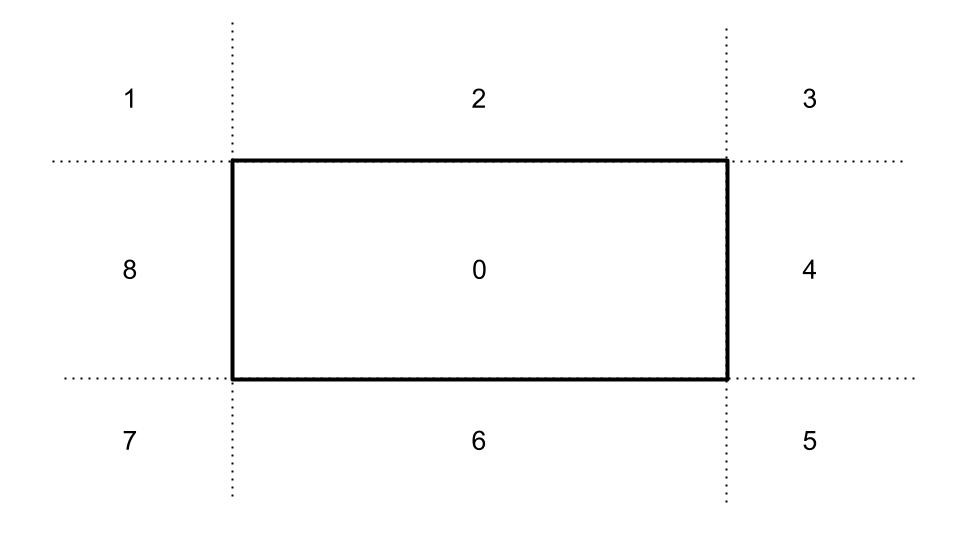
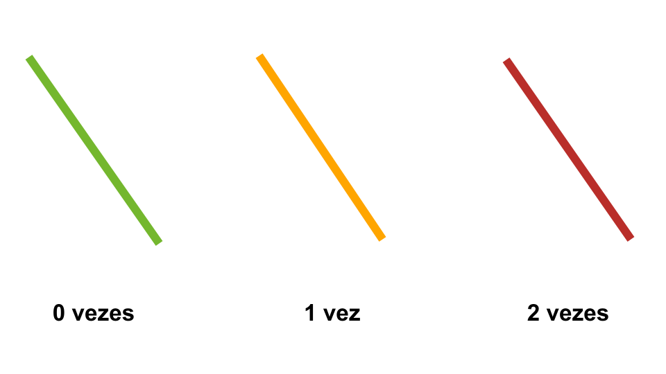

O Algoritmo de Cohen Sutherland para Linhas
Passos do algoritmo
1. Delimitar as regiões

2. Determinar quantas vezes deve-se fazer o clipping

3. Fazer o Clipping no A
- Cheque se a interseção do segmento com o lado do retângulo mais próximo está dentro dos limites do retângulo
- Se A estiver nas regiões 1,3, 5 ou 7, tente fazer o clipping duas vezes, pois o segmento pode intersectar o retângulo verticalmente ou horizontalmente
- Se a interseção for válida, torne esse ponto A', apagando AA', e a análise continua com o segmento A'B
- Mude a cor do segmento para indicar se é necessário realizar o clipping em B
4. Fazer o Clipping no B
- Cheque se a interseção do segmento com o lado do retângulo mais próximo está dentro dos limites do retângulo
- Se B estiver nas regiões 1,3, 5 ou 7, tente fazer o clipping duas vezes, pois o segmento pode intersectar o retângulo verticalmente ou horizontalmente
- Se a interseção for válida, torne esse ponto B', apagando BB', e o resultado é o segmento A'B'